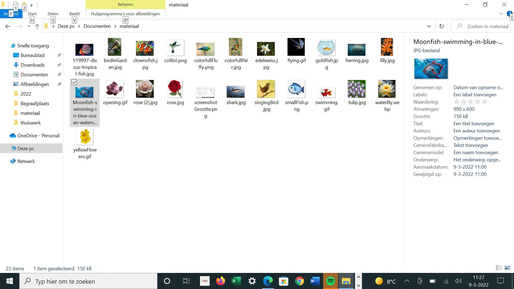
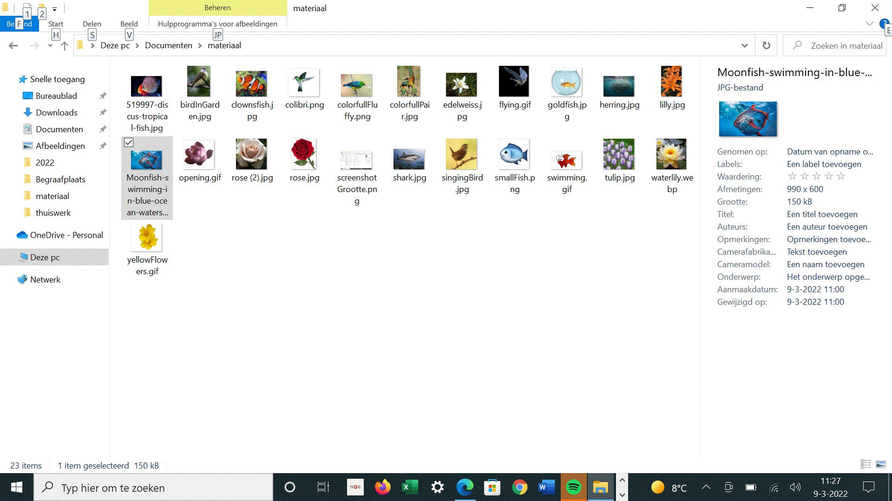

Files for excercise files and folders

- Create a folder-stucture like the image here on the right side.
- create a folder with the name files_folders;
- create folders inside this named: documents and pictures;
- inside pictures create folders birds and fish and flowers;
- Download the images and the other linked files from this page.
- compress the files_folders folder to a zip-file and share it with me.


 


/blackburnian-warbler-singing-5c3a0672c9e77c000142d400.jpg)